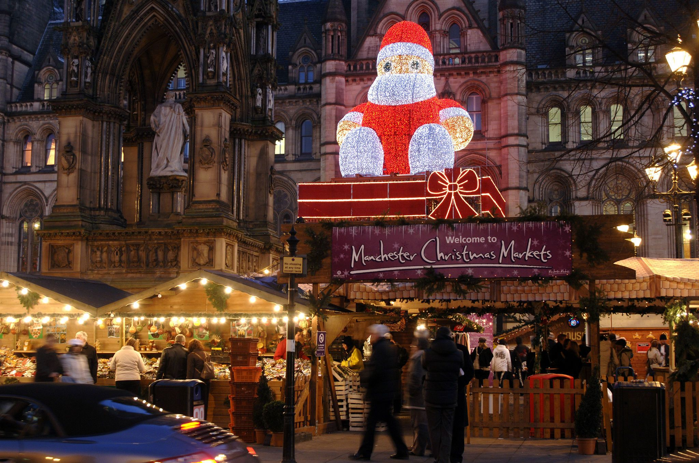

Home Manchester Christmas Market Family Events National Football Museum Halloween events
Click here to find out much more!
Manchester Christmas Markets Manchester’s award-winning Christmas Markets 2019 returned offering mouth-watering international food, drinks and delicately crafted Yuletide gifts in the heart of this buzzing city. With more than 300 beautifully festooned stalls and chalets spread across the city centre, the Christmas Markets are free and accessible to all. Soak up the atmosphere and follow the market trail as it winds through the city centre, tempting you with gifts, crafts, jewellery, clothes and toys. European and local producers offer everything from fine amber jewellery, handcrafted leather bags and top-quality bonsai trees, to handmade Belgian kitchenware, framed photo prints and French soaps. And when planning a visit, don’t miss the amazing array of food and drink! Manchester’s Christmas Markets are famous for traditional bratwurst, but visitors can also treat themselves to Hungarian goulash, Spanish paella or a good old-fashioned hog roast. Plenty of vegetarian options will be on offer, and for those with a sweet tooth the choices are even more mouth-watering. Manchester Christmas Market Locations and opening dates and times: Albert Square - Friday 8 November to Sunday 22 December, 10am to 9pm. Cathedral Gardens - Friday 8 November to Sunday 5 January, 10am to 9pm Piccadilly Gardens - Friday 8 November to Sunday 22 December, 10am to 9pm Market Street - Friday 8 November to Saturday 21 December, 10am to 9pm Exchange Square - Friday 8 November to Saturday 21 December, 10am to 9pm New Cathedral Street - Friday 8 November to Saturday 21 December, 10am to 9pm King Street - Friday 8 December to Saturday 21 December, 10am to 9pm St Ann's Square - Friday 8 November to Saturday 21 December, 10am to 9pm